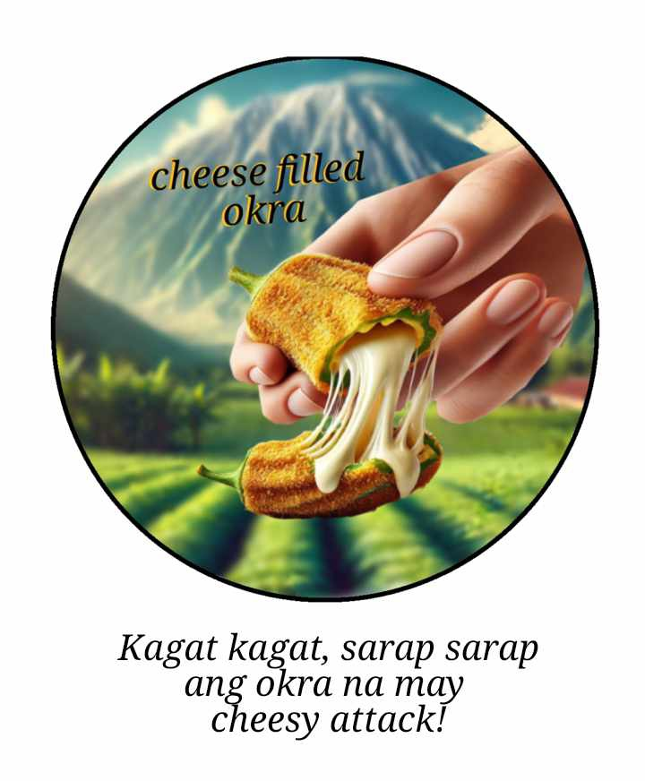

Cheese-Filled Okra

Introduction
Okra (Abelmoschus Esculentus), commonly known as lady’s finger, is a warm-season vegetable that belongs to the Malvaceae family. It is an annual herb grown in tropical, subtropical, and warm temperate climates across Africa, Asia, Southern Europe, and America. Okra is a nutritious and tasty vegetable whose appreciation is more commonly linked to sensor characteristics, such as texture and flavor. This vegetable is rich in vitamins C and K, high in fiber and magnesium, and packed with antioxidants. Though often ignored and sometimes made fun of, okra contributes various potential health benefits; its support for heart health and blood sugar control. Okra pod is a greenish capsule usually 10-30 cm long; slightly curved in shape and fibrous in nature, a much-dotted seed.
There’s cheese, a highly enjoyed dairy product for its rich taste and creaminess in texture. It is also a great source of calcium and protein necessary for bone development and muscle work.
Taking this as an inspiration, the researchers have brought these two different food combinations together into one to prepare Cheese-Filled Okra. We wanted to make it fun and tasty, transforming a rather ordinary vegetable into something truly exciting and delicious. Careful preparation, the removal of sliminess by washing the okra deeply before filling it with melted cheese, coating, and frying, transforms this combination of food that may have the potential to create an exciting experience for consumers.
Play Now!